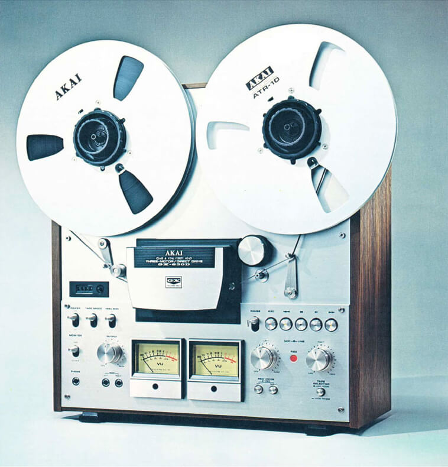
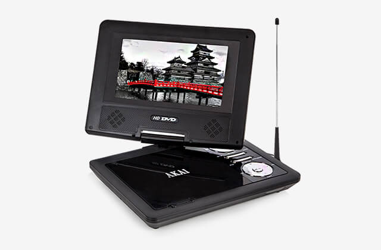

Akai was formed with one overall mission statement “enhance life enjoyment through technology”. Its products to this day still embrace that philosophy and it’s still at the very core of everything we create.
Whilst Akai is still dedicated to the delivering the best possible sound and picture both in the home or on the move, it has diversified its range to ensure all your home electrical needs can now be met by one trustworthy market leading brand.
1920s
Founded by Masukichi Akai and his son in 1920s Japan, a place renowned for its pre-industrial advanced technology, it was clear that Akai would become a household name of quality electronics. From the initial distribution of reel-to-reel audio equipment, Akai adapted to the latest developing technologies, including on-screen display, which resulted in the creation of the first consumer VCR.
1960s
With growing expertise in audio technology, Akai soon developed its products by adopting the latest technologies in Europe and the US to enhance the quality of their products, which included reel-to-reel audiotape recorders, audio cassettes, amplifiers, microphones, receivers, turntables, video recorders and loud speakers.
The GX-630D Open-Reel Recorder Circa 1970
1980s
Akai’s innovative technological development took a pioneering turn with the reveal of on-screen display, which began during the 1980s when consumers were introduced to the Akai VS-2, the first in VCR on-screen display. It was from there that Akai took the lead in elevating other competing manufacturers to adopt on-screen display into their own technologies.
2016
With extensive ranges of superior electrical technology now available, AKAI has developed trusted products in areas of home appliances, digital and telecommunication. Continuing to deliver and maintain the highest quality standards, Akai strives to deeply integrate into everyone's daily life.
Akai Portable DVD Player with 270 Degree Swivel Screen